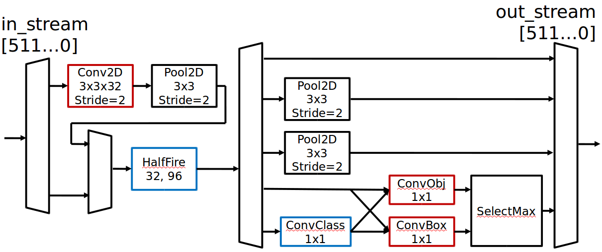

spooNN is an FPGA-based neural network inference library. It was developed as a solution to the System Design Contest as part of Design Automation Conference 2018. The goal of the contest was to design an accurate, high throughput and low-power object detection accelerator.
We leveraged co-design to obtain the highest processing rate in the contest and ranked 2nd overall. We optimized a squeezenet topology, used heavy quantization for weights and activations, and designed a specialized pipeline on the FPGA from scratch.
Specialized object detection pipeline on the FPGA
green box: prediction, blue box: ground truth, red box: anchor